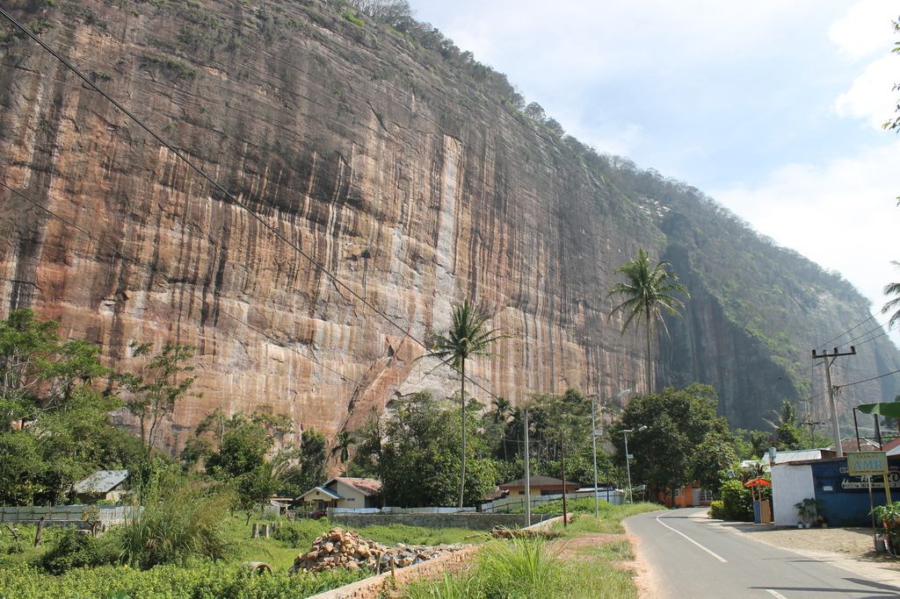

Sistem yang memantau kemajuan

- Rapat koordinasi lingkup pariwisata yang dilaksanakan 4 kali/ tahun.
- Monitoring dan evaluasi terhadap pelaksanaan Rencana Aksi Daerah yang dilaksanakan sebanyak 4 kali/ tahun.